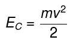
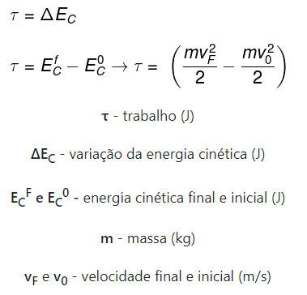
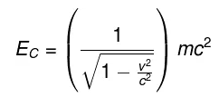

Cinética
A cinética é o ramo da física que se ocupa da descrição dos movimentos de pontos, corpos ou sistemas de corpos, sem se preocupar com a análise de suas causas.O termo cinética teve sua origem na palavra grega κίνησις kinesis, cujo significado é movimento.
Energia cinética
A energia cinética é uma modalidade de energia presente em todos os corpos em movimento. De acordo com o SI, sua unidade de medida é o joule. Além disso, essa energia é uma grandeza escalar que apresenta exclusivamente valores positivos.
A energia cinética não depende exclusivamente da velocidade de um corpo mas também de sua massa. Qualquer tipo de corpo em movimento é dotado desse tipo de energia: translação, rotação, vibração e outros. A energia cinética pode ser calculada pela fórmula seguinte:
Nessa fórmula vemos as seguintes variáveis: Ec, m e v. Onde Ec é energia cinética (J), m é a massa do objeto (kg) e v é a velocidade (m/s)
Teorema do Trabalho e energia cinética
O teorema do trabalho e energia cinética afirma que o trabalho realizado sobre um corpo ou partícula é equivalente à variação de sua energia cinética. Esse teorema pode ser descrito por meio da seguinte equação:
De acordo com o Teorema do Trabalho e Energia Cinética, o trabalho realizado sobre um objeto é exatamente igual à variação da energia cinética sofrida por ele.
Desse modo, à medida em que uma força é aplicada a favor do movimento de um corpo, há aumento de velocidade, que leva ao aumento de energia cinética. Assim se estabelece a relação entre energia cinética e trabalho.
Energia Cinética relativística
A fórmula que é classicamente usada para calcular a energia cinética apresenta limitações: quando os corpos passam a mover-se em velocidades próximas à velocidade da luz (3,0.108 m/s). Nesse caso, é necessário que se apliquem correções provenientes da teoria da relatividade e relacionadas à inércia do corpo (massa).
Quando algum corpo aproxima-se da velocidade da luz, a sua inércia tende a aumentar junto com a sua velocidade, desse modo, qualquer corpo que tenha alguma massa, jamais alcançará a velocidade da luz. A imagem seguinte apresenta a fórmula da energia cinética relativística, confira:
Já vimos o significado de algumas dessas variáveis, mas há uma que ainda não vimos, o c. Essa variável c se refere a velocidade da luz (c = 3,0 . 108 m/s)